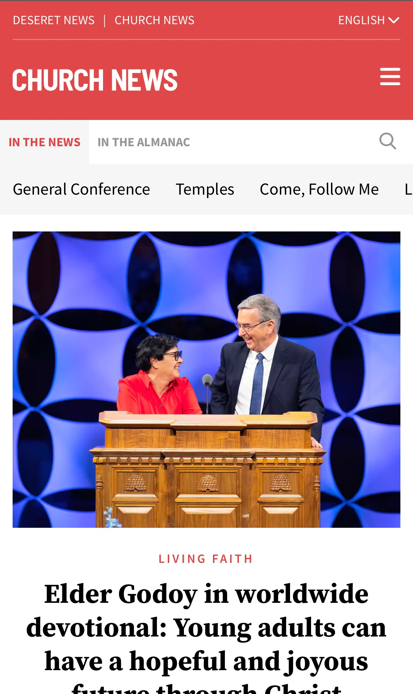

The Church News website is a good example of the design principle, visual hierarchy, because of the way the designer used a bold background in the header to draw your eyes there first. Then a headings in varying weights to pull your attention to important, or current news first.